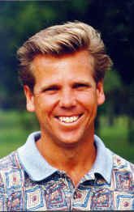

John Nelson, PGA
Teaching Professional
Nelson's Golf School, Ft. Lauderdale, Florida
A Miami native, John Nelson is the owner and director of Nelson's Golf School located at the Inverray Country Club in Ft. Lauderdale, FL. He is considered one of the top instructors in the State of Florida.
In 1998, John was the Southern Chapter PGA Champion, as well as Player of the Year. In 1996 and 1997, he was chosen as the South Florida PGA Section Teacher of the Year, and in 1995 was awarded the Southern Chapter PGA Bill Strausbaugh Award given to an individual who, through their day-to-day efforts, have caused dramatic improvements in employment conditions for fellow professionals. And in 1993, was selected as the Southern Chapter PGA Merchandiser of the Year.
As a player, John has competed in several major championships and PGA Tour events,
including the PGA Championship (1993, 1996), the Doral-Ryder Open and the Honda Classic
(1997).
A graduate of Auburn University and a member of the golf team, John turned professional in
1982. Over the past 17 years John has taught the game to players of all skill levels,
including junior players. His golf school offers junior programs and camps during holiday
breaks and summer months. John's teaching philosophy is to teach the complexities of the
game in the most simplest way, so that every golfer will enjoy the great game of golf.
John continues to serve the PGA in many ways. He was President of the South Florida
Chapter in 1998, and of the Southern PGA Chapter in 1993. In addition, he has held many
other offices and board member positions as secretary, treasurer and director.
John has appeared on "Golf Academy Live with Peter Kessler", is a writer for the
Internet Website golf.com, and has hosted a 30-minute show on the Golf
Channel. You can also find his golf instruction tips in the Sun-Sentinel Newspaper.